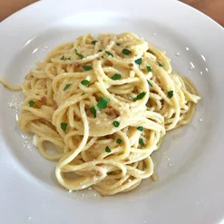

Spaghetti Cacio e Pepe

Description
A very basic and easy variation on mac 'n cheese.
Ingredients
- 1 pound spaghetti
- 6 tbsp olive oil
- 2 cloves garlic, minced
- 2 tsp ground black pepper
- 1 3/4 cups grated Pecorino Romano cheese
Directions
- Bring a large pot of lightly salted water to a boil. Cook spaghetti in the boiling water, stirring occasionally until tender yet firm to the bite, about 10 minutes. Scoop out some of the cooking water and reserve. Drain spaghetti.
- Heat oil in a large skillet over medium heat. Add garlic and pepper; cook and stir until fragrant, 1 to 2 minutes. Add spaghetti and Pecorino Romano cheese. Ladle in 1/2 cup of reserved cooking water; stir until cheese is melted, about 1 minute. Add more cooking water until sauce coats spaghetti, about 1 minute more.
- Enjoy!